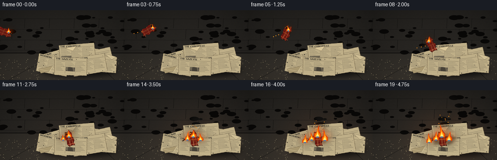
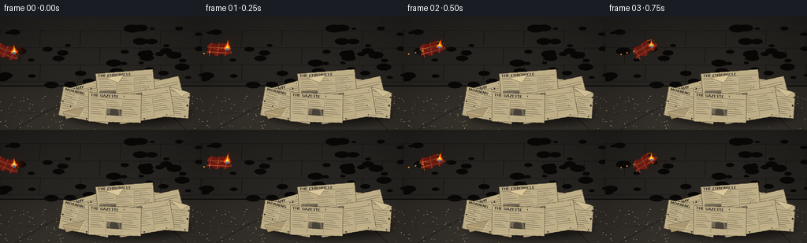

CODING AGENTS AS PIXEL WORLD MODELS
traex/GPT-5.6-Sol · phygen_145
点击播放 · 原生 RGB 像素
逐轮保存的候选
回放视频、检查图与代码变化。
每份候选均可单独播放。实际图片检查记录在下方工具轨迹中。
候选 01播放与检查图
点击播放 · 原生 RGB 像素


展开代码变化
--- 上一保存版本
+++ 本次保存版本
@@ -0,0 +1,262 @@
+from pathlib import Path
+import math, json
+import numpy as np
+from PIL import Image, ImageDraw, ImageFilter, ImageFont
+import artifact_io
+
+CASE_DIR = Path(__file__).resolve().parent
+SPEC = json.loads((CASE_DIR / 'task_spec.json').read_text())
+W, H, N = SPEC['width'], SPEC['height'], SPEC['frames']
+S = 3
+WS, HS = W*S, H*S
+rng = np.random.default_rng(145)
+
+def sc(v): return int(round(v*S))
+def pts(seq): return [(sc(x),sc(y)) for x,y in seq]
+
+def font(size, bold=False):
+ choices = ['/usr/share/fonts/truetype/dejavu/DejaVuSans-Bold.ttf' if bold else '/usr/share/fonts/truetype/dejavu/DejaVuSans.ttf']
+ for p in choices:
+ if Path(p).exists(): return ImageFont.truetype(p, sc(size))
+ return ImageFont.load_default()
+
+FONT_B = font(4.5, True)
+FONT_S = font(2.35, False)
+
+# fixed surface texture and dust
+noise = rng.normal(0, 1, (HS, WS))
+dust = [(float(rng.uniform(0,W)), float(rng.uniform(100,H)), float(rng.uniform(.15,.7))) for _ in range(180)]
+brick_marks = [(float(rng.uniform(0,W)), float(rng.uniform(13,88)), float(rng.uniform(3,11)), int(rng.integers(18,35))) for _ in range(45)]
+
+# individual newspapers, back to front
+papers = [
+ (174,96,-10,72,42,'EVENING POST',0), (199,101,11,67,40,'CITY NEWS',1),
+ (123,100,14,65,39,'DAILY',2), (159,91,3,76,45,'THE CHRONICLE',3),
+ (211,111,-7,60,36,'NEWS',4), (108,113,-13,67,39,'MORNING',5),
+ (183,113,7,73,40,'DAILY NEWS',6), (145,116,-4,70,39,'THE GAZETTE',7),
+]
+
+def make_paper(w,h,title,variant, burn=0.0):
+ # Render at supersampled local size.
+ iw, ih = sc(w), sc(h)
+ im = Image.new('RGBA',(iw,ih),(0,0,0,0)); d=ImageDraw.Draw(im)
+ poly=[(sc(1),sc(2)),(iw-sc(2),0),(iw,ih-sc(3)),(sc(3),ih)]
+ base=(190-int(25*burn),174-int(35*burn),135-int(45*burn),255)
+ d.polygon(poly, fill=base, outline=(108,94,70,255), width=sc(.55))
+ # old paper mottling and folds
+ rr=np.random.default_rng(900+variant)
+ for _ in range(18):
+ x,y=rr.uniform(2,w-2),rr.uniform(2,h-2); r=rr.uniform(.3,1.2)
+ d.ellipse((sc(x-r),sc(y-r),sc(x+r),sc(y+r)),fill=(120,95,56,int(rr.uniform(8,22))))
+ d.line((sc(4),sc(8),iw-sc(4),sc(7)), fill=(92,82,66,255), width=sc(.45))
+ # headline and tiny newspaper columns
+ d.text((sc(4),sc(2.3)), title, font=FONT_B, fill=(48,45,39,255))
+ y0=10
+ for col in range(3):
+ x0=4+col*(w-8)/3
+ if col: d.line((sc(x0),sc(y0),sc(x0),ih-sc(4)),fill=(112,101,82,220),width=sc(.3))
+ for k in range(8):
+ yy=y0+2.6*k
+ ln=(w-11)/3 * (0.55+0.4*((k+variant+col)%4)/3)
+ d.line((sc(x0+1),sc(yy),sc(x0+1+ln),sc(yy)), fill=(75,70,60,205), width=sc(.38))
+ # one photo block
+ px=4+(variant%3)*(w-8)/3
+ py=h*.54
+ d.rectangle((sc(px+1),sc(py),sc(px+(w-11)/3),sc(py+8)),fill=(88,82,69,190))
+ d.line((sc(2),sc(h-2),sc(w-1),sc(h-7)),fill=(225,211,172,170),width=sc(.8))
+ return im
+
+paper_cache={}
+for _,_,a,w,h,t,v in papers:
+ im=make_paper(w,h,t,v)
+ paper_cache[v]=im.rotate(a, resample=Image.Resampling.BICUBIC, expand=True)
+
+def paste_center(base, im, x,y):
+ base.alpha_composite(im,(sc(x)-im.width//2,sc(y)-im.height//2))
+
+def background(frame):
+ # Dark plaster wall and concrete floor, warm light increasing after impact.
+ yy,xx=np.mgrid[0:HS,0:WS]
+ impact=max(0,(frame-8)/11)
+ glow=impact*np.exp(-(((xx/S-153)/72)**2+((yy/S-103)/56)**2))*28
+ wall=np.zeros((HS,WS,3),dtype=np.float32)
+ wall[:,:,0]=36 + 8*(yy/HS) + glow
+ wall[:,:,1]=34 + 7*(yy/HS) + glow*.45
+ wall[:,:,2]=31 + 6*(yy/HS) + glow*.12
+ # floor starts at horizon y=88 and is slightly brighter toward camera
+ floor=yy/S>=88
+ dist=np.clip((yy/S-88)/56,0,1)
+ wall[:,:,0]=np.where(floor, 47+13*dist+glow, wall[:,:,0])
+ wall[:,:,1]=np.where(floor, 44+11*dist+glow*.42, wall[:,:,1])
+ wall[:,:,2]=np.where(floor, 39+9*dist+glow*.12, wall[:,:,2])
+ vign=1-.34*np.clip(((xx/S-W/2)/(W*.72))**2+((yy/S-H/2)/(H*.9))**2,0,1)
+ wall*=vign[:,:,None]
+ wall += noise[:,:,None]*1.8
+ arr=np.uint8(np.clip(wall,0,255)); im=Image.fromarray(arr,'RGB').convert('RGBA'); d=ImageDraw.Draw(im,'RGBA')
+ # back wall masonry seams and stained plaster
+ for y in [17,39,61,82]: d.line((0,sc(y),WS,sc(y+1)),fill=(13,13,13,68),width=sc(.8))
+ for row,y in enumerate([17,39,61]):
+ off=25 if row%2 else 0
+ for x in range(off,257,51): d.line((sc(x),sc(y),sc(x-1),sc(y+20)),fill=(18,17,15,55),width=sc(.65))
+ for x,y,r,a in brick_marks:
+ d.ellipse((sc(x-r),sc(y-r*.45),sc(x+r),sc(y+r*.45)),fill=(8,7,6,a))
+ # floor/wall join, floor perspective cracks
+ d.line((0,sc(88),WS,sc(88)),fill=(12,11,10,170),width=sc(1.4))
+ d.line(pts([(18,144),(66,116),(89,108)]),fill=(23,22,19,130),width=sc(.7))
+ d.line(pts([(236,144),(211,120),(205,103)]),fill=(24,22,19,110),width=sc(.65))
+ d.line(pts([(12,124),(58,121),(78,113)]),fill=(27,25,22,100),width=sc(.5))
+ for x,y,r in dust:
+ d.ellipse((sc(x-r),sc(y-r*.35),sc(x+r),sc(y+r*.35)),fill=(173,158,120,25))
+ return im
+
+def draw_pile(base, frame):
+ # Contact shadow
+ sh=Image.new('RGBA',(WS,HS),(0,0,0,0)); sd=ImageDraw.Draw(sh)
+ sd.ellipse((sc(80),sc(105),sc(242),sc(139)),fill=(0,0,0,150))
+ sh=sh.filter(ImageFilter.GaussianBlur(sc(5))); base.alpha_composite(sh)
+ for x,y,a,w,h,title,v in papers:
+ im=paper_cache[v].copy()
+ paste_center(base,im,x,y)
+ d=ImageDraw.Draw(base,'RGBA')
+ # curled corners and torn loose strips create pile depth
+ d.polygon(pts([(79,121),(109,115),(102,126),(84,130)]),fill=(168,151,112,255),outline=(88,74,54,220))
+ d.line(pts([(79,121),(102,126),(109,115)]),fill=(224,207,165,220),width=sc(.8))
+ d.polygon(pts([(215,89),(239,96),(230,102)]),fill=(207,190,148,245),outline=(91,79,61,220))
+ d.polygon(pts([(134,78),(157,74),(150,84)]),fill=(218,199,154,245),outline=(106,88,60,220))
+ # progressive scorch visible around landing spot
+ if frame>=9:
+ p=(frame-9)/10
+ scorch=Image.new('RGBA',(WS,HS),(0,0,0,0)); q=ImageDraw.Draw(scorch,'RGBA')
+ for i in range(16):
+ ang=2*math.pi*i/16+.31
+ rad=(7+22*p)*(0.68+0.32*math.sin(i*4.1)**2)
+ cx=145+math.cos(ang)*rad*.7; cy=101+math.sin(ang)*rad*.34
+ rr=2.2+4*p
+ q.ellipse((sc(cx-rr),sc(cy-rr*.55),sc(cx+rr),sc(cy+rr*.55)),fill=(25,14,7,int(20+95*p)))
+ scorch=scorch.filter(ImageFilter.GaussianBlur(sc(2.2))); base.alpha_composite(scorch)
+ d=ImageDraw.Draw(base,'RGBA')
+ # curling blackened paper margins
+ if frame>=13:
+ d.line(pts([(120,105),(130,97),(142,99),(151,96),(163,101)]),fill=(37,23,13,int(80+120*p)),width=sc(1.2+1.3*p))
+
+def flame_shape(cx, basey, height, width, phase):
+ lean=math.sin(phase)*width*.22
+ return [(cx-width*.52,basey),(cx-width*.44,basey-height*.30),
+ (cx-width*.18+lean*.15,basey-height*.43),(cx+lean,basey-height),
+ (cx+width*.15+lean*.35,basey-height*.55),(cx+width*.48,basey-height*.28),(cx+width*.48,basey)]
+
+def draw_flames(base, flames, frame):
+ if not flames: return
+ # shared colored halos
+ glow=Image.new('RGBA',(WS,HS),(0,0,0,0)); gd=ImageDraw.Draw(glow,'RGBA')
+ for i,(x,y,h,w) in enumerate(flames):
+ flick=.88+.16*math.sin(frame*1.71+i*2.33)
+ gd.ellipse((sc(x-w*1.1),sc(y-h*flick),sc(x+w*1.1),sc(y+h*.2)),fill=(255,82,5,90))
+ glow=glow.filter(ImageFilter.GaussianBlur(sc(7))); base.alpha_composite(glow)
+ d=ImageDraw.Draw(base,'RGBA')
+ for i,(x,y,h,w) in enumerate(flames):
+ flick=.88+.16*math.sin(frame*1.71+i*2.33)
+ hh=h*flick; ph=frame*.91+i*1.77
+ d.polygon(pts(flame_shape(x,y,hh,w,ph)),fill=(232,60,6,245))
+ d.polygon(pts(flame_shape(x,y-1,hh*.73,w*.68,ph+.7)),fill=(255,145,8,255))
+ d.polygon(pts(flame_shape(x,y-1,hh*.42,w*.38,ph+1.4)),fill=(255,235,125,255))
+ # blue ignition rim at base
+ d.ellipse((sc(x-w*.23),sc(y-1.5),sc(x+w*.23),sc(y+1)),fill=(87,113,153,120))
+
+def cloth_image(frame, landed=False):
+ cw,ch=(35,20) if not landed else (38,18)
+ im=Image.new('RGBA',(sc(cw),sc(ch)),(0,0,0,0)); d=ImageDraw.Draw(im,'RGBA')
+ # ragged fabric silhouette
+ poly=pts([(2,4),(8,1),(15,3),(22,1),(33,5),(31,10),(35,14),(26,18),(20,16),(13,19),(7,15),(1,16),(3,10)])
+ d.polygon(poly,fill=(108,24,18,255),outline=(38,20,15,255),width=sc(.8))
+ # plaid weave and folds
+ for x in [7,17,27]: d.line((sc(x),sc(2),sc(x-2),sc(18)),fill=(210,73,38,170),width=sc(1.1))
+ for y in [7,13]: d.line((sc(2),sc(y),sc(33),sc(y+1)),fill=(224,118,56,145),width=sc(.9))
+ d.line(pts([(3,5),(15,10),(27,6),(33,13)]),fill=(246,135,72,100),width=sc(.8))
+ # charred burning corner and glowing edge
+ d.polygon(pts([(25,2),(33,5),(31,10),(26,8)]),fill=(25,19,15,255))
+ d.line(pts([(25,3),(31,5),(29,9)]),fill=(255,102,20,240),width=sc(.9))
+ return im
+
+def draw_airborne(base, frame):
+ # Cloth enters from left and follows a clear parabolic trajectory.
+ x=8+14.0*frame
+ y=45-4.0*frame+.9*frame*frame
+ angle=-18+17*frame
+ cloth=cloth_image(frame).rotate(angle,resample=Image.Resampling.BICUBIC,expand=True)
+ # short motion ghost and smoke trail, behind object
+ trail=Image.new('RGBA',(WS,HS),(0,0,0,0)); td=ImageDraw.Draw(trail,'RGBA')
+ for j in range(1,4):
+ px=x-j*6; py=y+j*(2-frame*.12)
+ td.ellipse((sc(px-3-j),sc(py-2-j*.4),sc(px+3+j),sc(py+2+j*.4)),fill=(42,40,37,45-j*7))
+ trail=trail.filter(ImageFilter.GaussianBlur(sc(2.8))); base.alpha_composite(trail)
+ paste_center(base,cloth,x,y)
+ # flame rides on upper/rear charred corner
+ draw_flames(base,[(x+math.cos(math.radians(angle))*10,y-math.sin(math.radians(angle))*5,12,8)],frame)
+ # a couple sparks trailing backward
+ d=ImageDraw.Draw(base,'RGBA')
+ for j in range(3):
+ sx=x-14-j*7+math.sin(frame+j)*2; sy=y+3+j*2
+ d.ellipse((sc(sx-.7),sc(sy-.7),sc(sx+.7),sc(sy+.7)),fill=(255,150,35,170-j*35))
+
+def draw_smoke(base, frame):
+ smoke=Image.new('RGBA',(WS,HS),(0,0,0,0)); d=ImageDraw.Draw(smoke,'RGBA')
+ if frame < 9: return
+ age=frame-9
+ # drifting, rising translucent plume; deterministic temporal continuity
+ for k in range(12):
+ birth=k*.72
+ a=age-birth
+ if a < 0: continue
+ x=146 + math.sin(k*2.4+a*.55)*5 + a*1.0
+ y=92-a*7.0
+ r=4+a*1.8
+ alpha=int(max(0,70-a*7))
+ d.ellipse((sc(x-r),sc(y-r*.72),sc(x+r),sc(y+r*.72)),fill=(24,23,21,alpha))
+ smoke=smoke.filter(ImageFilter.GaussianBlur(sc(4.2))); base.alpha_composite(smoke)
+
+def draw_landed(base, frame):
+ # fabric settles from impact compression to a charred resting shape
+ age=frame-9
+ x=136+min(age,2)*3.0; y=95+min(age,2)*2.0
+ ang=126-age*8 if age<3 else 103
+ cloth=cloth_image(frame,True).rotate(ang,resample=Image.Resampling.BICUBIC,expand=True)
+ paste_center(base,cloth,x,y)
+ growth=min(1,age/7)
+ flames=[(142,97,13+12*growth,10+4*growth)]
+ # newspapers catch at multiple edges after impact
+ if frame>=11: flames.append((130,103,7+15*growth,7+5*growth))
+ if frame>=13: flames.append((157,104,6+18*growth,8+5*growth))
+ if frame>=16: flames.append((116,108,6+13*growth,7+4*growth))
+ draw_flames(base,flames,frame)
+ # airborne embers rise from spreading fire
+ d=ImageDraw.Draw(base,'RGBA')
+ if frame>=10:
+ for i in range(11):
+ age2=(frame-10)*.9-i*.47
+ if age2<0: continue
+ ex=143+math.sin(i*3.2+age2)*10 + age2*.7
+ ey=91-age2*5.2
+ a=max(0,230-int(age2*22))
+ r=.45+(i%3)*.18
+ d.ellipse((sc(ex-r),sc(ey-r),sc(ex+r),sc(ey+r)),fill=(255,135+8*(i%4),30,a))
+
+def render(frame):
+ im=background(frame)
+ # smoke belongs behind flames but in front of wall/papers
+ draw_pile(im,frame)
+ if frame>=9: draw_smoke(im,frame)
+ if frame<=8: draw_airborne(im,frame)
+ else: draw_landed(im,frame)
+ # subtle foreground optical bloom and ash flecks after ignition
+ if frame>=12:
+ d=ImageDraw.Draw(im,'RGBA')
+ for i in range(7):
+ x=104+((i*29+frame*7)%90); y=119+((i*11+frame*3)%19)
+ d.ellipse((sc(x-.3),sc(y-.15),sc(x+.3),sc(y+.15)),fill=(210,190,150,65))
+ im=im.convert('RGB').resize((W,H),Image.Resampling.LANCZOS)
+ return np.asarray(im,dtype=np.uint8)
+
+frames=np.stack([render(i) for i in range(N)])
+artifact_io.save(frames, CASE_DIR)
+print('saved',frames.shape,frames.dtype,'to',CASE_DIR)
可观测工具轨迹
实际执行的命令与返回图片。
命令 1exit 0
/bin/bash -lc "cat prompt.txt && printf '\\n--- GENERATION_RULES ---\\n' && cat GENERATION_RULES.md"
命令 2exit 0
/bin/bash -lc "cat task_spec.json && printf '\\n--- FILES ---\\n' && find . -maxdepth 2 -type f -printf '%p\\n' | sort"
命令 3exit 0
/bin/bash -lc 'cat artifact_io.py'
命令 4exit 0
/bin/bash -lc "cat > generate.py <<'PY'
from pathlib import Path
import math, json
import numpy as np
from PIL import Image, ImageDraw, ImageFilter, ImageFont
import artifact_io
CASE_DIR = Path(__file__).resolve().parent
SPEC = json.loads((CASE_DIR / 'task_spec.json').read_text())
W, H, N = SPEC['width'], SPEC['height'], SPEC['frames']
S = 3
WS, HS = W*S, H*S
rng = np.random.default_rng(145)
def sc(v): return int(round(v*S))
def pts(seq): return [(sc(x),sc(y)) for x,y in seq]
def font(size, bold=False):
choices = ['/usr/share/fonts/truetype/dejavu/DejaVuSans-Bold.ttf' if bold else '/usr/share/fonts/truetype/dejavu/DejaVuSans.ttf']
for p in choices:
if Path(p).exists(): return ImageFont.truetype(p, sc(size))
return ImageFont.load_default()
FONT_B = font(4.5, True)
FONT_S = font(2.35, False)
# fixed surface texture and dust
noise = rng.normal(0, 1, (HS, WS))
dust = [(float(rng.uniform(0,W)), float(rng.uniform(100,H)), float(rng.uniform(.15,.7))) for _ in range(180)]
brick_marks = [(float(rng.uniform(0,W)), float(rng.uniform(13,88)), float(rng.uniform(3,11)), int(rng.integers(18,35))) for _ in range(45)]
# individual newspapers, back to front
papers = [
(174,96,-10,72,42,'EVENING POST',0), (199,101,11,67,40,'CITY NEWS',1),
(123,100,14,65,39,'DAILY',2), (159,91,3,76,45,'THE CHRONICLE',3),
(211,111,-7,60,36,'NEWS',4), (108,113,-13,67,39,'MORNING',5),
(183,113,7,73,40,'DAILY NEWS',6), (145,116,-4,70,39,'THE GAZETTE',7),
]
def make_paper(w,h,title,variant, burn=0.0):
# Render at supersampled local size.
iw, ih = sc(w), sc(h)
im = Image.new('RGBA',(iw,ih),(0,0,0,0)); d=ImageDraw.Draw(im)
poly=[(sc(1),sc(2)),(iw-sc(2),0),(iw,ih-sc(3)),(sc(3),ih)]
base=(190-int(25*burn),174-int(35*burn),135-int(45*burn),255)
d.polygon(poly, fill=base, outline=(108,94,70,255), width=sc(.55))
# old paper mottling and folds
rr=np.random.default_rng(900+variant)
for _ in range(18):
x,y=rr.uniform(2,w-2),rr.uniform(2,h-2); r=rr.uniform(.3,1.2)
d.ellipse((sc(x-r),sc(y-r),sc(x+r),sc(y+r)),fill=(120,95,56,int(rr.uniform(8,22))))
d.line((sc(4),sc(8),iw-sc(4),sc(7)), fill=(92,82,66,255), width=sc(.45))
# headline and tiny newspaper columns
d.text((sc(4),sc(2.3)), title, font=FONT_B, fill=(48,45,39,255))
y0=10
for col in range(3):
x0=4+col*(w-8)/3
if col: d.line((sc(x0),sc(y0),sc(x0),ih-sc(4)),fill=(112,101,82,220),width=sc(.3))
for k in range(8):
yy=y0+2.6*k
ln=(w-11)/3 * (0.55+0.4*((k+variant+col)%4)/3)
d.line((sc(x0+1),sc(yy),sc(x0+1+ln),sc(yy)), fill=(75,70,60,205), width=sc(.38))
# one photo block
px=4+(variant%3)*(w-8)/3
py=h*.54
d.rectangle((sc(px+1),sc(py),sc(px+(w-11)/3),sc(py+8)),fill=(88,82,69,190))
d.line((sc(2),sc(h-2),sc(w-1),sc(h-7)),fill=(225,211,172,170),width=sc(.8))
return im
paper_cache={}
for _,_,a,w,h,t,v in papers:
im=make_paper(w,h,t,v)
paper_cache[v]=im.rotate(a, resample=Image.Resampling.BICUBIC, expand=True)
def paste_center(base, im, x,y):
base.alpha_composite(im,(sc(x)-im.width//2,sc(y)-im.height//2))
def background(frame):
# Dark plaster wall and concrete floor, warm light increasing after impact.
yy,xx=np.mgrid[0:HS,0:WS]
impact=max(0,(frame-8)/11)
glow=impact*np.exp(-(((xx/S-153)/72)**2+((yy/S-103)/56)**2))*28
wall=np.zeros((HS,WS,3),dtype=np.float32)
wall[:,:,0]=36 + 8*(yy/HS) + glow
wall[:,:,1]=34 + 7*(yy/HS) + glow*.45
wall[:,:,2]=31 + 6*(yy/HS) + glow*.12
# floor starts at horizon y=88 and is slightly brighter toward camera
floor=yy/S>=88
dist=np.clip((yy/S-88)/56,0,1)
wall[:,:,0]=np.where(floor, 47+13*dist+glow, wall[:,:,0])
wall[:,:,1]=np.where(floor, 44+11*dist+glow*.42, wall[:,:,1])
wall[:,:,2]=np.where(floor, 39+9*dist+glow*.12, wall[:,:,2])
vign=1-.34*np.clip(((xx/S-W/2)/(W*.72))**2+((yy/S-H/2)/(H*.9))**2,0,1)
wall*=vign[:,:,None]
wall += noise[:,:,None]*1.8
arr=np.uint8(np.clip(wall,0,255)); im=Image.fromarray(arr,'RGB').convert('RGBA'); d=ImageDraw.Draw(im,'RGBA')
# back wall masonry seams and stained plaster
for y in [17,39,61,82]: d.line((0,sc(y),WS,sc(y+1)),fill=(13,13,13,68),width=sc(.8))
for row,y in enumerate([17,39,61]):
off=25 if row%2 else 0
for x in range(off,257,51): d.line((sc(x),sc(y),sc(x-1),sc(y+20)),fill=(18,17,15,55),width=sc(.65))
for x,y,r,a in brick_marks:
d.ellipse((sc(x-r),sc(y-r*.45),sc(x+r),sc(y+r*.45)),fill=(8,7,6,a))
# floor/wall join, floor perspective cracks
d.line((0,sc(88),WS,sc(88)),fill=(12,11,10,170),width=sc(1.4))
d.line(pts([(18,144),(66,116),(89,108)]),fill=(23,22,19,130),width=sc(.7))
d.line(pts([(236,144),(211,120),(205,103)]),fill=(24,22,19,110),width=sc(.65))
d.line(pts([(12,124),(58,121),(78,113)]),fill=(27,25,22,100),width=sc(.5))
for x,y,r in dust:
d.ellipse((sc(x-r),sc(y-r*.35),sc(x+r),sc(y+r*.35)),fill=(173,158,120,25))
return im
def draw_pile(base, frame):
# Contact shadow
sh=Image.new('RGBA',(WS,HS),(0,0,0,0)); sd=ImageDraw.Draw(sh)
sd.ellipse((sc(80),sc(105),sc(242),sc(139)),fill=(0,0,0,150))
sh=sh.filter(ImageFilter.GaussianBlur(sc(5))); base.alpha_composite(sh)
for x,y,a,w,h,title,v in papers:
im=paper_cache[v].copy()
paste_center(base,im,x,y)
d=ImageDraw.Draw(base,'RGBA')
# curled corners and torn loose strips create pile depth
d.polygon(pts([(79,121),(109,115),(102,126),(84,130)]),fill=(168,151,112,255),outline=(88,74,54,220))
d.line(pts([(79,121),(102,126),(109,115)]),fill=(224,207,165,220),width=sc(.8))
d.polygon(pts([(215,89),(239,96),(230,102)]),fill=(207,190,148,245),outline=(91,79,61,220))
d.polygon(pts([(134,78),(157,74),(150,84)]),fill=(218,199,154,245),outline=(106,88,60,220))
# progressive scorch visible around landing spot
if frame>=9:
p=(frame-9)/10
scorch=Image.new('RGBA',(WS,HS),(0,0,0,0)); q=ImageDraw.Draw(scorch,'RGBA')
for i in range(16):
ang=2*math.pi*i/16+.31
rad=(7+22*p)*(0.68+0.32*math.sin(i*4.1)**2)
cx=145+math.cos(ang)*rad*.7; cy=101+math.sin(ang)*rad*.34
rr=2.2+4*p
q.ellipse((sc(cx-rr),sc(cy-rr*.55),sc(cx+rr),sc(cy+rr*.55)),fill=(25,14,7,int(20+95*p)))
scorch=scorch.filter(ImageFilter.GaussianBlur(sc(2.2))); base.alpha_composite(scorch)
d=ImageDraw.Draw(base,'RGBA')
# curling blackened paper margins
if frame>=13:
d.line(pts([(120,105),(130,97),(142,99),(151,96),(163,101)]),fill=(37,23,13,int(80+120*p)),width=sc(1.2+1.3*p))
def flame_shape(cx, basey, height, width, phase):
lean=math.sin(phase)*width*.22
return [(cx-width*.52,basey),(cx-width*.44,basey-height*.30),
(cx-width*.18+lean*.15,basey-height*.43),(cx+lean,basey-height),
(cx+width*.15+lean*.35,basey-height*.55),(cx+width*.48,basey-height*.28),(cx+width*.48,basey)]
def draw_flames(base, flames, frame):
if not flames: return
# shared colored halos
glow=Image.new('RGBA',(WS,HS),(0,0,0,0)); gd=ImageDraw.Draw(glow,'RGBA')
for i,(x,y,h,w) in enumerate(flames):
flick=.88+.16*math.sin(frame*1.71+i*2.33)
gd.ellipse((sc(x-w*1.1),sc(y-h*flick),sc(x+w*1.1),sc(y+h*.2)),fill=(255,82,5,90))
glow=glow.filter(ImageFilter.GaussianBlur(sc(7))); base.alpha_composite(glow)
d=ImageDraw.Draw(base,'RGBA')
for i,(x,y,h,w) in enumerate(flames):
flick=.88+.16*math.sin(frame*1.71+i*2.33)
hh=h*flick; ph=frame*.91+i*1.77
d.polygon(pts(flame_shape(x,y,hh,w,ph)),fill=(232,60,6,245))
d.polygon(pts(flame_shape(x,y-1,hh*.73,w*.68,ph+.7)),fill=(255,145,8,255))
d.polygon(pts(flame_shape(x,y-1,hh*.42,w*.38,ph+1.4)),fill=(255,235,125,255))
# blue ignition rim at base
d.ellipse((sc(x-w*.23),sc(y-1.5),sc(x+w*.23),sc(y+1)),fill=(87,113,153,120))
def cloth_image(frame, landed=False):
cw,ch=(35,20) if not landed else (38,18)
im=Image.new('RGBA',(sc(cw),sc(ch)),(0,0,0,0)); d=ImageDraw.Draw(im,'RGBA')
# ragged fabric silhouette
poly=pts([(2,4),(8,1),(15,3),(22,1),(33,5),(31,10),(35,14),(26,18),(20,16),(13,19),(7,15),(1,16),(3,10)])
d.polygon(poly,fill=(108,24,18,255),outline=(38,20,15,255),width=sc(.8))
# plaid weave and folds
for x in [7,17,27]: d.line((sc(x),sc(2),sc(x-2),sc(18)),fill=(210,73,38,170),width=sc(1.1))
for y in [7,13]: d.line((sc(2),sc(y),sc(33),sc(y+1)),fill=(224,118,56,145),width=sc(.9))
d.line(pts([(3,5),(15,10),(27,6),(33,13)]),fill=(246,135,72,100),width=sc(.8))
# charred burning corner and glowing edge
d.polygon(pts([(25,2),(33,5),(31,10),(26,8)]),fill=(25,19,15,255))
d.line(pts([(25,3),(31,5),(29,9)]),fill=(255,102,20,240),width=sc(.9))
return im
def draw_airborne(base, frame):
# Cloth enters from left and follows a clear parabolic trajectory.
x=8+14.0*frame
y=45-4.0*frame+.9*frame*frame
angle=-18+17*frame
cloth=cloth_image(frame).rotate(angle,resample=Image.Resampling.BICUBIC,expand=True)
# short motion ghost and smoke trail, behind object
trail=Image.new('RGBA',(WS,HS),(0,0,0,0)); td=ImageDraw.Draw(trail,'RGBA')
for j in range(1,4):
px=x-j*6; py=y+j*(2-frame*.12)
td.ellipse((sc(px-3-j),sc(py-2-j*.4),sc(px+3+j),sc(py+2+j*.4)),fill=(42,40,37,45-j*7))
trail=trail.filter(ImageFilter.GaussianBlur(sc(2.8))); base.alpha_composite(trail)
paste_center(base,cloth,x,y)
# flame rides on upper/rear charred corner
draw_flames(base,[(x+math.cos(math.radians(angle))*10,y-math.sin(math.radians(angle))*5,12,8)],frame)
# a couple sparks trailing backward
d=ImageDraw.Draw(base,'RGBA')
for j in range(3):
sx=x-14-j*7+math.sin(frame+j)*2; sy=y+3+j*2
d.ellipse((sc(sx-.7),sc(sy-.7),sc(sx+.7),sc(sy+.7)),fill=(255,150,35,170-j*35))
def draw_smoke(base, frame):
smoke=Image.new('RGBA',(WS,HS),(0,0,0,0)); d=ImageDraw.Draw(smoke,'RGBA')
if frame < 9: return
age=frame-9
# drifting, rising translucent plume; deterministic temporal continuity
for k in range(12):
birth=k*.72
a=age-birth
if a < 0: continue
x=146 + math.sin(k*2.4+a*.55)*5 + a*1.0
y=92-a*7.0
r=4+a*1.8
alpha=int(max(0,70-a*7))
d.ellipse((sc(x-r),sc(y-r*.72),sc(x+r),sc(y+r*.72)),fill=(24,23,21,alpha))
smoke=smoke.filter(ImageFilter.GaussianBlur(sc(4.2))); base.alpha_composite(smoke)
def draw_landed(base, frame):
# fabric settles from impact compression to a charred resting shape
age=frame-9
x=136+min(age,2)*3.0; y=95+min(age,2)*2.0
ang=126-age*8 if age<3 else 103
cloth=cloth_image(frame,True).rotate(ang,resample=Image.Resampling.BICUBIC,expand=True)
paste_center(base,cloth,x,y)
growth=min(1,age/7)
flames=[(142,97,13+12*growth,10+4*growth)]
# newspapers catch at multiple edges after impact
if frame>=11: flames.append((130,103,7+15*growth,7+5*growth))
if frame>=13: flames.append((157,104,6+18*growth,8+5*growth))
if frame>=16: flames.append((116,108,6+13*growth,7+4*growth))
draw_flames(base,flames,frame)
# airborne embers rise from spreading fire
d=ImageDraw.Draw(base,'RGBA')
if frame>=10:
for i in range(11):
age2=(frame-10)*.9-i*.47
if age2<0: continue
ex=143+math.sin(i*3.2+age2)*10 + age2*.7
ey=91-age2*5.2
a=max(0,230-int(age2*22))
r=.45+(i%3)*.18
d.ellipse((sc(ex-r),sc(ey-r),sc(ex+r),sc(ey+r)),fill=(255,135+8*(i%4),30,a))
def render(frame):
im=background(frame)
# smoke belongs behind flames but in front of wall/papers
draw_pile(im,frame)
if frame>=9: draw_smoke(im,frame)
if frame<=8: draw_airborne(im,frame)
else: draw_landed(im,frame)
# subtle foreground optical bloom and ash flecks after ignition
if frame>=12:
d=ImageDraw.Draw(im,'RGBA')
for i in range(7):
x=104+((i*29+frame*7)%90); y=119+((i*11+frame*3)%19)
d.ellipse((sc(x-.3),sc(y-.15),sc(x+.3),sc(y+.15)),fill=(210,190,150,65))
im=im.convert('RGB').resize((W,H),Image.Resampling.LANCZOS)
return np.asarray(im,dtype=np.uint8)
frames=np.stack([render(i) for i in range(N)])
artifact_io.save(frames, CASE_DIR)
print('saved',frames.shape,frames.dtype,'to',CASE_DIR)
PY
python generate.py"命令 5exit 0
/bin/bash -lc "python - <<'PY'
import numpy as np
from PIL import Image
p=np.load('pixels.npz')['pixels']
print('pixels',p.shape,p.dtype,'frames_unique',[len(np.unique(p[:,:,i])) for i in range(p.shape[2])])
for i in [0,4,8,9,12,16,19]:
im=np.array(Image.open(f'frames/{i:02d}.png'))
print(i, im.shape, im.dtype, tuple(im.mean((0,1)).round(1)), int(im.min()), int(im.max()))
PY
ls -lh pixels.npz index.html inspection.png frames/00.png frames/19.png"视觉工具实际返回图片 1

保存候选 1 份；完成命令 5 次；可验证图片返回 1 张。原始 API 响应与完整日志保留在本地。